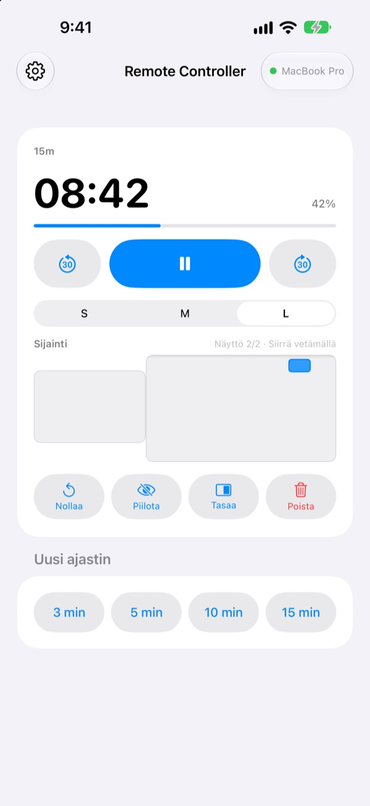
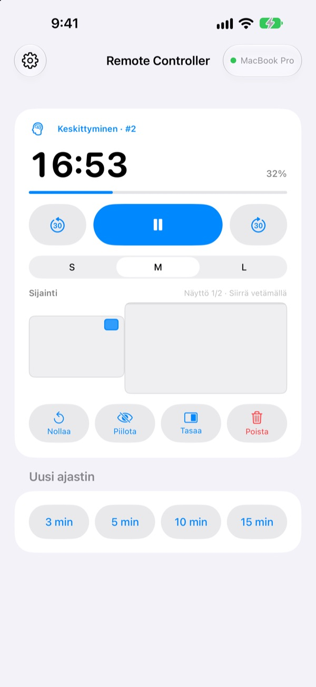
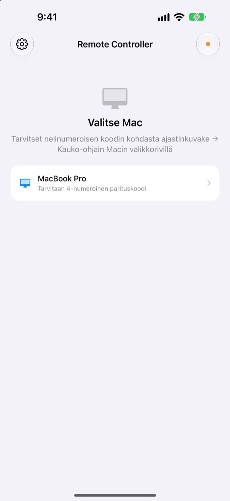

Mac jää taakse,
ajastin pysyy kädessä
Ohjaa Macin StickyPresenter-ajastimia iPhonella. Kävele salin eteen ja näet silti jäljellä olevan ajan, voit pitää tauon, lisätä 30 sekuntia tai siirtää ajastimen pois kaavion päältä.
Ilmainen · iOS 17 tai uudempi · Vaatii samassa Wi‑Fi-verkossa Macin, jossa StickyPresenter on käynnissä.

Joudutko yhä kävelemään läppärille säätämään ajastinta?
Esitys venyy ja tarvitset lisäaikaa. Ajastin peittää juuri sen tärkeimmän kaavion. Tähän asti se on tarkoittanut lavan poikki kävelemistä ja ohjauslevyyn tarttumista koko yleisön edessä. Remote Controllerin kanssa pysyt paikallasi ja napautat iPhonea kerran.
Näe jäljellä oleva aika ja korjaa sitä heti
Jäljellä oleva aika ja edistyminen päivittyvät sekunnin välein. Pomodorossa näet myös, onko vuorossa Keskittyminen vai Tauko ja monesko kierros on menossa.
Venyykö puhe? Lisää 30 sekuntia. Pääsetkö loppuun etuajassa? Vähennä 30 sekuntia. Aloita uusi 3, 5, 10 tai 15 minuutin ajastin yhdellä napautuksella ja vaihda widgetin kooksi S, M tai L, jotta takarivikin näkee sen.

Koodi syötetään vain kerran
Avaa appi, niin luettelossa näkyvät kaikki saman Wi‑Fi-verkon Macit, joissa StickyPresenter on käynnissä. Valitse omasi ja syötä nelinumeroinen koodi, joka näkyy Macin valikkorivillä kohdassa ajastinkuvake ▸ Kauko-ohjain.
Sen jälkeen appi yhdistää tuohon Maciin itsestään aina, kun avaat sen. Ei tiliä eikä palvelinta: laitteet puhuvat suoraan keskenään paikallisessa verkossa.

Käyttövalmis kolmessa vaiheessa
- 1
Käynnistä StickyPresenter Macissa
Kun ajastinkuvake näkyy valikkorivillä, kaikki on valmista. Appi pysyy siellä, vaikka sulkisit kaikki ikkunat.
- 2
Avaa appi samassa Wi‑Fi-verkossa
Kun appi pyytää lupaa paikalliseen verkkoon, napauta Salli. Vain siten se löytää Macisi.
- 3
Valitse Mac ja syötä koodi
Syötä nelinumeroinen parituskoodi Macin valikkorivin kohdasta ajastinkuvake ▸ Kauko-ohjain, ja ajastin on hallinnassasi.
Mitä iPhonella voi tehdä
- Jäljellä oleva aika
- Jäljellä oleva aika, edistyminen, Pomodoron Keskittyminen tai Tauko ja kierroksen numero sekunnin välein
- Aloita · Tauko
- Yksi iso painike keskellä
- −30 s · +30 s
- Sivujen painikkeet säätävät käynnissä olevaa ajastinta heti
- Uusi ajastin
- 3, 5, 10 tai 15 minuuttia
- Widgetin koko
- Widget koossa S, M tai L
- Sijainti
- Vedä widgetiä Macin näyttöjärjestelyn pienoiskuvassa, myös lisänäytölle
- Piilota
- Piilota widget yleisöltä hetkeksi
- Tasaa
- Tuo kadonnut widget takaisin ajastinikkunan viereen
- Nollaa · Poista
- Aloita ajastin alusta tai poista se
- Pikakomennot · Siri
- Sano
Käynnistä ajastin: Remote Controller, niin Maciin ilmestyy ajastin
Kauko-ohjain ohjaa vain Macissa käynnissä olevia ajastimia. Muistilappuja ja teleprompterin tekstejä ei koskaan lähetetä iPhoneen, eikä appi vaihda dioja.
Kysymyksiä
Voiko iPhone-appia käyttää yksinään?
Ei. Remote Controller on Macin StickyPresenterin kauko-ohjain, joten StickyPresenterin pitää olla käynnissä Macissa samassa Wi‑Fi-verkossa. Mac-apin saat alla olevasta linkistä tai apin asetuksista kohdasta Hanki Mac-appi.
Macini ei näy luettelossa.
Jos yhtään Macia ei löydy 10 sekunnissa, appi näyttää tarkistuslistan. Käy se läpi ylhäältä alkaen: StickyPresenter on käynnissä Macissa (ajastinkuvake näkyy valikkorivillä), molemmat laitteet ovat samassa Wi‑Fi-verkossa (vierasverkko ei käy), Remote Controller on sallittu iPhonen kohdassa Asetukset ▸ Tietosuoja ja turvallisuus ▸ Paikallinen verkko, StickyPresenter on sallittu Macin kohdassa Järjestelmäasetukset ▸ Tietosuoja ja turvallisuus ▸ Paikallinen verkko ja VPN on pois päältä.
Appi sanoo, että koodi on väärä.
Syötä ne neljä numeroa, jotka näkyvät juuri nyt Macin valikkorivillä kohdassa ajastinkuvake ▸ Kauko-ohjain. Jos joku on valinnut Macissa Uusi parituskoodi, vain uusi koodi kelpaa.
Appi sanoo, ettei Mac tunnista tätä iPhonea.
Näin käy, kun Macissa on valittu Unohda pariliitetyt kauko-ohjaimet tai StickyPresenter on asennettu uudelleen. Napauta Macia luettelossa ja syötä parituskoodi vielä kerran.
Appi sanoo, ettei Mac vastaa.
Tarkista, ettei Mac ole lepotilassa, että molemmat laitteet ovat samassa Wi‑Fi-verkossa ja että VPN on pois päältä.
Appi sanoo, että Macin appi pitää päivittää.
Macin StickyPresenter on vanhempi kuin kauko-ohjain. Päivitä se Mac App Storesta ja valitse Mac sitten uudelleen.
Onko käyttö turvallista kokoushuoneessa, jossa on monta Macia?
On. Kauko-ohjain puhuu vain sen yhden Macin kanssa, johon se on paritettu, eikä koodia tuntematon kauko-ohjain pääse Maciisi. Kaikki kulkee salattuna suoraan laitteiden välillä samassa verkossa. Jos olet joskus näyttänyt koodisi jollekulle, valitse Macissa Uusi parituskoodi.
Mitä internetiin lähtee?
Ajastimet ja komennot eivät koskaan poistu paikallisesta verkosta. Internetiin lähtevät vain nimettömät käyttötilastot, kaatumisraportit ja palaute, jonka itse päätät lähettää. Tarkemmat tiedot ovat tietosuojakäytännössä.
Voiko Siri käynnistää ajastimen juuri ennen kuin nousen lavalle?
Voi. Sano "Käynnistä ajastin: Remote Controller" tai käytä Pikakomennot-apin toimintoa Käynnistä ajastin Macissa. Appi avautuu ja käynnistää valitsemasi pituisen ajastimen (1 minuutista 600 minuuttiin) heti, kun yhteys Maciin on muodostettu.
Kysyttävää, virheitä tai ideoita? Kirjoita osoitteeseen mizzking75@gmail.com tai lähetä viesti suoraan iPhonesta: apin vasemman yläkulman ratas ▸ Palaute.